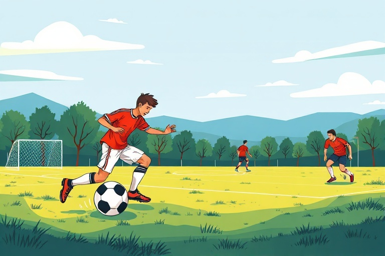

ফুটবল খেলার মৌলিক নিয়ম ও নতুনদের জন্য সহজ গাইড
Category: football | Language: bn
ফুটবল বিশ্বের অন্যতম জনপ্রিয় খেলা এবং ভারতের বিশেষ করে পশ্চিমবঙ্গ ও কেরলে এর জনপ্রিয়তা আকাশচুম্বী। তবে কেবল বলের পিছনে দৌড়ালেই ফুটবল খেলা হয় না; এর কিছু নির্দিষ্ট নিয়ম ও কৌশল রয়েছে যা একজন নতুন খেলোয়াড়কে শিখতে হয়। এই নিবন্ধটি মূলত সেইসব নতুনদের জন্য যারা ফুটবল খেলা শুরু করতে চান এবং খেলার মৌলিক বিষয়গুলো সহজভাবে বুঝতে চান। মাঠের পজিশন থেকে শুরু করে বল নিয়ন্ত্রণের প্রাথমিক পাঠ—সবই এখানে আলোচনা করা হয়েছে যাতে আপনি আত্মবিশ্বাসের সাথে মাঠে নামতে পারেন।
ফুটবলের প্রধান নিয়ম হলো গোলরক্ষক বা গোলকিপার ছাড়া মাঠের অন্য দশজন খেলোয়াড় হাতের ব্যবহার করতে পারবেন না। তারা কেবল পা, মাথা বা বুক ব্যবহার করে বল নিয়ন্ত্রণ করতে পারেন। একটি আন্তর্জাতিক মানের ম্যাচ সাধারণত ৯০ মিনিটের হয়, যা ৪৫ মিনিটের দুটি অর্ধে বিভক্ত থাকে। মাঠের দুই প্রান্তে দুটি গোলপোস্ট থাকে এবং বিপক্ষ দলের জালে বল জড়ানোই হলো মূল লক্ষ্য। খেলা চলাকালীন বল যদি মাঠের সাইডলাইন দিয়ে বাইরে যায়, তবে 'থ্রো-ইন'-এর মাধ্যমে খেলা পুনরায় শুরু হয়, যেখানে একমাত্র তখনই মাঠের খেলোয়াড়রা হাত ব্যবহার করে বল ভেতরে ছুঁড়তে পারেন।
অফসাইড নিয়মটি নতুনদের কাছে কিছুটা জটিল মনে হতে পারে, কিন্তু এটি বোঝা অত্যন্ত জরুরি। সহজভাবে বললে, যখন আপনার দলের কোনো সদস্য আপনাকে বল পাস দিচ্ছেন, তখন আপনার এবং বিপক্ষ দলের গোললাইনের মাঝে অন্তত দুইজন বিপক্ষ খেলোয়াড় (সাধারণত গোলকিপার এবং একজন ডিফেন্ডার) থাকা বাধ্যতামূলক। আপনি যদি তাদের থেকে এগিয়ে থাকেন, তবে সেটি অফসাইড হিসেবে গণ্য হবে। এছাড়া ফাউল বা নিয়মভঙ্গের জন্য রেফারি হলুদ বা লাল কার্ড দেখাতে পারেন। গুরুতর ফাউল করলে বা ডি-বক্সের ভেতরে নিয়ম ভাঙলে বিপক্ষ দল পেনাল্টি পাওয়ার সুযোগ পায়, যা সরাসরি গোল করার একটি সুবর্ণ সুযোগ।
ফুটবল খেলার প্রথম ধাপ হলো বলের ওপর নিয়ন্ত্রণ আনা বা 'বল কন্ট্রোল'। পাসের ক্ষেত্রে পায়ের ভেতরের অংশ (Inside of the foot) ব্যবহার করা সবচেয়ে কার্যকর, কারণ এতে বলের দিক ও গতি ঠিক থাকে। ড্রিবলিং করার সময় বলটিকে নিজের শরীরের খুব কাছে রাখা উচিত যাতে প্রতিপক্ষ সহজে কেড়ে নিতে না পারে। নতুনদের জন্য ছোট ছোট পা ফেলে বল নিয়ে এগোনোর অভ্যাস করা জরুরি। এছাড়া বল রিসিভ করার সময় পা কিছুটা আলগা রাখা প্রয়োজন যাতে বলটি আপনার পায়ে লেগে দূরে ছিটকে না যায়, একে বলা হয় 'সফট টাচ'।
একটি বাস্তব উদাহরণ দিয়ে বিষয়টি বোঝা যাক। ধরুন আপনি মাঠের মাঝখানে বল পেয়েছেন এবং আপনার সামনে একজন শক্ত ডিফেন্ডার দাঁড়িয়ে আছে। এই পরিস্থিতিতে সরাসরি তাকে কাটানোর চেষ্টা না করে আপনি আপনার পাশের সতীর্থকে একটি ছোট পাস দিতে পারেন। একে 'ওয়ান-টু' পাস বলা হয়। আপনি পাস দিয়ে দ্রুত ফাঁকা জায়গায় চলে যান এবং আপনার সতীর্থ দ্রুত বলটি আপনাকে ফেরত দেবেন। এই সাধারণ দলীয় কৌশলের মাধ্যমে আপনি সহজেই ডিফেন্ডারকে বোকা বানিয়ে গোলপোস্টের দিকে এগিয়ে যেতে পারেন। কেবল ব্যক্তিগত নৈপুণ্য নয়, পাসিং গেমই ফুটবলে জেতার আসল চাবিকাঠি।
ফুটবল শুরু করার জন্য খুব বেশি দামী সরঞ্জামের প্রয়োজন নেই, তবে সঠিক জুতো বা ‘বুট’ কেনা জরুরি। ঘাসের মাঠে খেলার জন্য স্টাডস (Studs) যুক্ত জুতো এবং শক্ত মাটির জন্য ফ্ল্যাট সোল বা ছোট রাবার স্টাডসের জুতো বেছে নিন। আঘাত থেকে বাঁচতে পায়ের নলার সামনে শিন-গার্ড (Shin-guards) পরা বাধ্যতামূলক। ভারতে ভালো মানের একটি ফুটবল ৫০০ থেকে ১৫০০ টাকার মধ্যে পাওয়া যায় এবং বুট ১০০০ টাকা থেকে শুরু করে বিভিন্ন দামের হতে পারে। খেলার সময় সিন্থেটিক বা সুতির আরামদায়ক জার্সি এবং হাফপ্যান্ট ব্যবহার করা ভালো যাতে ঘাম দ্রুত শুকিয়ে যায়।
নতুন খেলোয়াড়রা প্রায়ই একটি সাধারণ ভুল করেন—সবাই মিলে বলের পিছনে মৌমাছির মতো দৌড়ানো। একে 'বাঞ্চিং' বলা হয়। ফুটবলে নিজের নির্দিষ্ট পজিশন বা অবস্থানে থাকা এবং মাঠের জায়গা ব্যবহার করা খুব জরুরি। দ্বিতীয়ত, ড্রিবলিং করার সময় কেবল বলের দিকে তাকিয়ে থাকা একটি বড় ভুল; আপনাকে মাঠের চারপাশ এবং সতীর্থদের অবস্থানের দিকেও নজর রাখতে হবে। এছাড়া কেবল শক্তিশালী পা দিয়ে খেলার চেষ্টা না করে বাম এবং ডান—উভয় পা ব্যবহারের অভ্যাস করলে আপনি একজন দক্ষ খেলোয়াড় হয়ে উঠতে পারবেন।
ফুটবল একটি শারীরিক পরিশ্রমের খেলা, তাই চোট এড়াতে খেলার আগে অন্তত ১০-১৫ মিনিট ওয়ার্ম-আপ বা শরীর গরম করা অত্যন্ত জরুরি। গোড়ালি বা হাঁটুর চোট এড়াতে জয়েন্ট স্ট্রেচিং করুন এবং খেলার মাঝে ও পরে পর্যাপ্ত জল পান করে শরীর হাইড্রেটেড রাখুন। পরিশেষে, ফুটবল শেখার সেরা উপায় হলো নিয়মিত মাঠে নামা। আপনার পাড়ার কোনো স্থানীয় ক্লাবে যোগ দিন বা বন্ধুদের সাথে ছোট ছোট ম্যাচ খেলুন। মনে রাখবেন, পেশাদার কৌশল রপ্ত করতে সময় লাগে, তাই ধৈর্য ধরে প্রতিদিন অন্তত ৩০ মিনিট বল নিয়ে অনুশীলন করাই হবে আপনার পরবর্তী পদক্ষেপ।